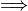
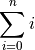

LaTex Reference#
The equations on this site were created using LaTex, a type-setting program for rendering mathematical symbols. On this page you will find the syntax for creating symbols that frequently occur in this class.
Arithmetic#
Fractions: \frac{a}{b}

Relations#
Inclusion: \in

Exclusion: \notin
Subset: \subset

Proper Subset: \subseteq

Less Than Or Equal To: \leq

Greater Than Or Equal TO: \geq

Equivalence: \equiv
Implication: \implies

Operations#
Union: \cup

Intersection: \cap

Sum: \sum_{i=0}

Sets#
Null Set : \varnothing

Natural Numbers : \mathbb{N}